Artistas reconhecidos
Hélio e Evan
Hélio e Evan são dois artistas angolanos contemporâneos conhecidos por trabalharem com temas sociais, culturais e identitários. Juntos, eles exploram questões relacionadas à vivência urbana, à juventude angolana, à memória e à crítica social. Suas obras costumam misturar pintura, instalação e elementos multimídia, criando composições modernas, coloridas e cheias de significado. A dupla ganhou destaque pelo estilo original e pela capacidade de conectar a arte ao cotidiano das novas gerações em Angola.
António Ole
António Ole é um dos artistas angolanos mais importantes e reconhecidos internacionalmente. Seu trabalho abrange pintura, instalação, fotografia e vídeo, sempre com forte ligação à história e à realidade social de Angola.
Ele é particularmente conhecido por retratar temas como identidade africana, colonialismo, guerra e reconstrução. Um dos elementos marcantes de sua obra é o uso de materiais encontrados nas ruas, que ele transforma em arte para representar a vida urbana e a resistência cultural. António Ole é considerado um dos grandes nomes da arte contemporânea africana.

Literatura
António Agostinho Neto
António Agostinho Neto foi uma das figuras mais importantes da história de Angola. Ele foi poeta, médico e líder político, além de ter se tornado o primeiro Presidente de Angola após a independência, em 1975.
Como escritor, é lembrado por sua poesia engajada, que expressa resistência, luta pela liberdade e valorização da identidade angolana. Como líder político, desempenhou papel central na libertação do país do domínio colonial e na construção do Estado angolano. Agostinho Neto permanece como um símbolo nacional, admirado tanto pela relevância literária quanto pelo papel histórico na independência.
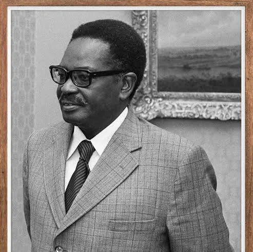Danças típicas
As danças típicas angolanas Semba e Kizomba representam parte essencial da identidade cultural do país. O Semba, considerado uma das expressões mais tradicionais de Angola, surgiu por volta das décadas de 1950 e 1960 e caracteriza-se por movimentos rápidos, alegres e cheios de energia. A dança reflete histórias do quotidiano e celebrações, unindo ritmo vivo e forte interação entre os dançarinos. Com o passar do tempo, o Semba influenciou o nascimento de um novo estilo: a Kizomba. Desenvolvida entre o fim dos anos 1970 e o início dos 1980, a Kizomba combina elementos do semba com influências afro-caribenhas, resultando numa dança mais lenta, suave e envolvente. Os movimentos fluem de forma harmoniosa e íntima, acompanhados por músicas melódicas e cadenciadas. Embora diferentes no estilo, Semba e Kizomba partilham a mesma raiz cultural angolana, mostrando como a tradição e a modernidade se conectam através da dança.
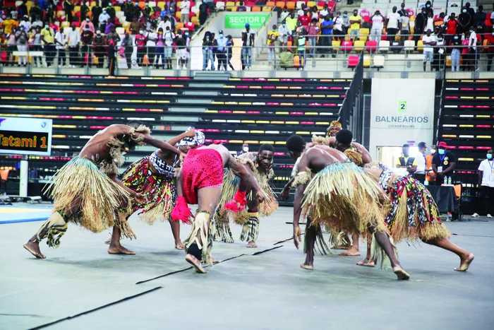Economia
A economia de Angola foi bastante afetada pela guerra civil que durou quase trinta anos, colocando o país juntamente com a Guiné-Bissau entre os mais pobres do planeta. Todavia, Angola apresenta boas taxas de crescimento apoiadas principalmente pelas suas exportações de petróleo. As jazidas de petróleo estão localizadas em quase toda a extensão da sua costa marítima.
Segundo índices de liberdade económica, Angola possui uma economia repressiva, ocupando o 149º lugar no índice de liberdade económica elaborado pela Heritage Fundation.[14]
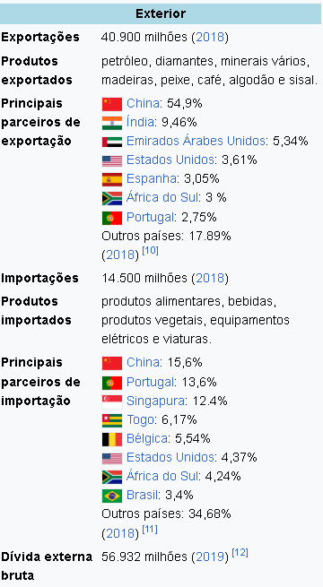Moeda
Primeiro Kwanza (AOK), 1977-1990 O kwanza foi introduzido após a independência de Angola. Substituiu o escudo em paridade e estava subdividido em 100 lwei. O seu código ISO 4217 era AOK.
Moedas As primeiras moedas foram cunhadas sem data de emissão, apesar de todas ostentarem a data da independência do país, 11 de Novembro de 1975 e a inscrição "RP DE ANGOLA" (i.e., República Popular de Angola). Tinham denominações de 10, 20, 50 lwei, 1, 2, 5 e 10 kwanzas. Em 1978 foram cunhadas moedas de 20 kwanzas. A última data a aparecer nestas moedas foi 1979. Notas
As primeiras cédulas datavam de 1976, mas só foram emitidas em 1977 pelo Banco Nacional nas denominações de 20, 50, 100, 500 e 1.000 kwanzas. A nota de 20 kwanzas foi substituída pela moeda em 1978
| Início | Fim | Moeda | Subdivisão | Equivalência |
|---|---|---|---|---|
| 8 de Janeiro de 1977 | 24 de Setembro de 1990 | Kwanza (AOK) | 100 lwei | 1 kwanza = 1 escudo angolano |
| 25 de Setembro de 1990 | 30 de Junho de 1995 | Novo kwanza (AON) | nenhuma | 1 novo kwanza = 1 kwanza |
| 1 de Julho de 1995 | 30 de Novembro de 1999 | Kwanza reajustado (AOR) | nenhuma | 1 kwanza reajustado = 1.000 novos kwanzas |
| 1 de Dezembro de 1999 | presente | Kwanza (AOA) | 100 cêntimos | 1 kwanza = 1.000.000 de kwanzas reajustados |
Gastronomia
A gastronomia angolana é marcada por sabores intensos e ingredientes simples. Um dos pratos tradicionais é o frango de cebolada à angolana, feito com bastante cebola, alho e tomate, resultando num molho saboroso e acolhedor. No geral, a comida do país é bem temperada e pode ser picante, já que o uso de pimentas é comum. As bebidas tradicionais incluem opções fermentadas e algumas versões alcoólicas, além de cervejas locais, que fazem parte do cotidiano. No conjunto, a culinária angolana se destaca pelo sabor forte e marcante.

Bandeira
Vermelho
A cor vermelha simboliza o sangue derramado pelos angolanos durante a longa luta contra o colonialismo português, representando todos os que perderam a vida em busca de liberdade e dignidade. Também expressa o sacrifício coletivo do povo angolano, não apenas na independência, mas também na defesa e reconstrução da pátria ao longo de momentos difíceis da sua história. Essa cor lembra a resistência, a luta e a determinação do país para conquistar sua soberania.
Preto
O preto representa o continente africano como um todo, destacando a origem, força e unidade das nações do continente. Simboliza a identidade africana, a solidariedade entre seus povos, bem como o orgulho das raízes e tradições culturais. Na bandeira de Angola, essa cor reforça a ideia de pertencimento à África e a valorização da herança cultural que molda a nação.
amarelo
A cor amarela está associada às riquezas naturais e econômicas de Angola. Entre os recursos mais importantes destacam-se o petróleo, os diamantes e outros minerais valiosos que desempenham papel significativo na economia do país. O amarelo é também um símbolo de esperança, prosperidade e das possibilidades de desenvolvimento futuro baseadas nessas riquezas.
emblema
O emblema central da bandeira é composto por três elementos principais: uma meia-engrenagem, um facão e uma estrela. Ele é inspirado parcialmente na simbologia socialista — semelhante ao conceito da foice e martelo da antiga URSS —, mas adaptado à realidade angolana.
- A engrenagem representa os trabalhadores e a indústria.
- O facão (catana) simboliza os camponeses, a luta armada e a independência.
- A estrela remete à solidariedade internacional, ao progresso e ao espírito revolucionário.
Extensão territorial
Angola, oficialmente República de Angola, é um país da costa ocidental da África Austral, cujo território tem uma área total de 1 246 700 km², sendo o sétimo maior país de África e o vigésimo segundo do mundo, com uma população estimada em 32,87 milhões de pessoas em 2020. A capital e maior cidade é Luanda, centro económico e político do país. Banhada pelo Oceano Atlântico a oeste, Angola tem um litoral de 1 650 km,[9] sendo o territórial principal limitado a norte e a nordeste pela República Democrática do Congo, a leste pela Zâmbia e a sul pela Namíbia. O país inclui também o exclave de Cabinda, através do qual faz fronteira com a República do Congo.
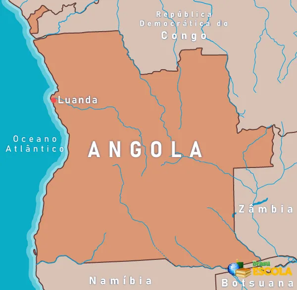1. Relevo O relevo de Angola é caracterizado pela presença de um extenso planalto central que domina a maior parte do território.
2. Hidrografia A hidrografia de Angola apresenta rios que desempenham papel essencial para o abastecimento de água, agricultura e geração de energia.
3. Urbanização A urbanização em Angola tem se acelerado nas últimas décadas, especialmente após o fim da guerra civil. A capital, Luanda, é o maior centro urbano do país e enfrenta desafios como crescimento desordenado, déficit habitacional e problemas de saneamento.
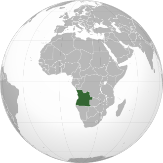Fauna
A fauna de Angola é bastante diversificada devido à grande variedade de biomas e ecossistemas presentes no país. A região abriga uma ampla gama de espécies animais, desde grandes mamíferos até aves, répteis e insetos. Essa diversidade é resultado da combinação de florestas tropicais úmidas, vastas savanas, zonas áridas e áreas montanhosas, que oferecem diferentes condições de habitat para inúmeras espécies.

Norte
Na região norte, onde predominam as florestas tropicais, encontra-se uma grande concentração de espécies típicas desse ambiente úmido e denso. É possível observar diferentes tipos de macacos, antílopes de floresta e diversas aves tropicais de cores vibrantes. Além disso, a área abriga uma enorme variedade de insetos, répteis e outros pequenos animais que dependem da vegetação fechada e do clima quente para sobreviver, tornando essa região uma das mais ricas em biodiversidade do país.
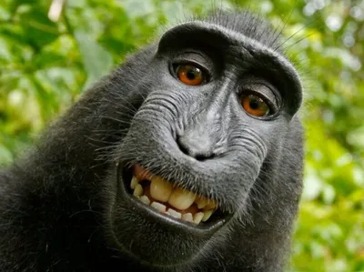
Savana
Nas savanas centrais e meridionais, predominam os grandes mamíferos que caracterizam o bioma de savana africana. Nessa região, é comum encontrar elefantes, leões, leopardos, zebras, girafas, gnus, búfalos e diversas espécies de antílopes que se adaptaram ao clima mais seco e às áreas abertas. Esses ambientes favorecem animais de grande porte e hábitos migratórios, formando alguns dos ecossistemas mais emblemáticos e ricos em vida selvagem de Angola.
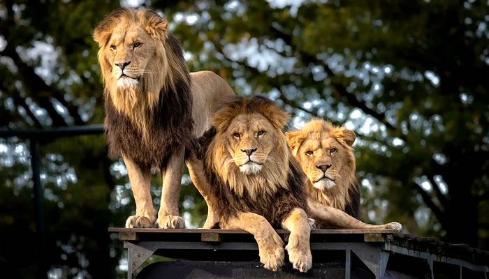
Sul e Sudeste
No sul e sudeste do país, onde o clima é mais árido e as chuvas são escassas, predominam espécies altamente adaptadas à falta de água e às temperaturas elevadas. Entre os animais mais característicos estão os orixes, conhecidos por sua grande resistência, além de pequenos carnívoros típicos de regiões desérticas. Esses ambientes secos também abrigam répteis e pequenos mamíferos que desenvolveram estratégias para sobreviver em condições extremas.
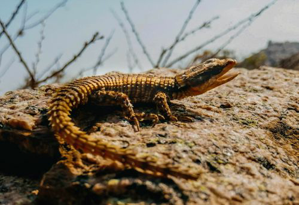
Costa
Nas zonas costeiras e ao longo dos rios angolanos, a fauna é marcada pela presença de espécies que dependem diretamente dos ambientes aquáticos. Nesses locais, é comum encontrar hipopótamos vivendo próximos às margens, crocodilos que ocupam rios e lagoas, além de uma grande variedade de peixes que sustentam tanto a biodiversidade quanto a pesca local. As áreas alagadas e estuários também atraem inúmeras aves aquáticas, como garças, flamingos e patos, que se alimentam e se reproduzem nesses ecossistemas ricos em nutrientes.
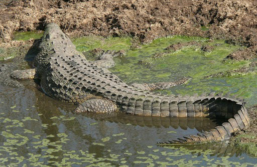Flora
A flora angolana apresenta grande diversidade e enorme riqueza biológica, resultado direto da combinação de diferentes tipos de clima, relevo e solos espalhados pelo país. Essa variedade ambiental permite o surgimento de múltiplas formações vegetais, que vão desde florestas densas e úmidas até savanas abertas, áreas semiáridas e regiões montanhosas. Estima-se que Angola possua mais de 5.000 espécies de plantas, muitas delas endêmicas, ou seja, encontradas apenas no território angolano. Essa diversidade faz do país um importante reservatório de biodiversidade vegetal no continente africano.

Floresta tropical úmida
A floresta tropica úmida se localiza principalmente no norte e nordeste. Apresenta árvores de grande porte, com copas densas e espécies típicas de floresta equatorial. Algumas espécies comuns: mognos africanos, ébano, pau-rosa, afromosia e palmeiras

Savana
A savana ocupa grande parte do centro e leste do país, sendo o tipo de vegetação mais predominante em Angola. É composta por gramíneas (capins) e árvores esparsas, como miombo, mopane e acácia. Um exemplo é o miombo, formado por árvores dos gêneros Brachystegia, Julbernardia e Isoberlinia. E essa vegetação suporta longos períodos de seca e sofre queimadas naturais ou provocadas.
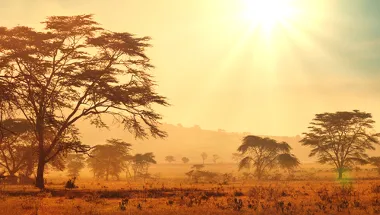
Árida e Semiárida
A vegetação árida e semiárida é encontrada no Sudoeste, especialmente nas províncias do Namibe e Cunene, onde o clima é desértico. Além disso as plantas são xerófitas (adaptadas à falta de água), com folhas reduzidas e raízes profundas. Uma espécie emblemática: Welwitschia mirabilis, considerada fóssil vivo e exclusiva do deserto do Namibe. Ela pode viver por mais de mil anos e é símbolo da flora angolana.
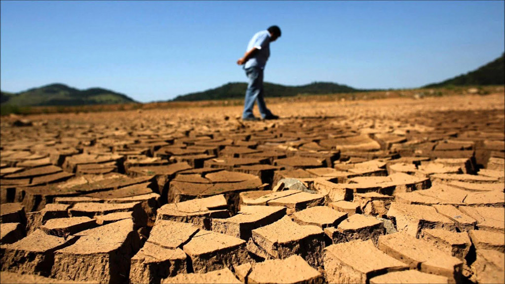
Floresta de galeria e vegetação ripária
Esse tipo de vegetação ocorre ao longo dos rios, córregos e zonas úmidas, mesmo quando está inserida no meio das savanas mais secas. As florestas de galeria formam corredores verdes que acompanham os cursos d’água, criando ambientes mais frescos e úmidos. Por causa da maior disponibilidade de água no solo, essas áreas apresentam árvores altas, copas densas e grande variedade de plantas que não sobrevivem em regiões mais áridas ao redor. Entre as espécies mais frequentes encontram-se figueiras, diferentes tipos de palmeiras, bambus e outras plantas adaptadas à umidade constante, tornando esses corredores ecológicos importantes refúgios para a fauna local.
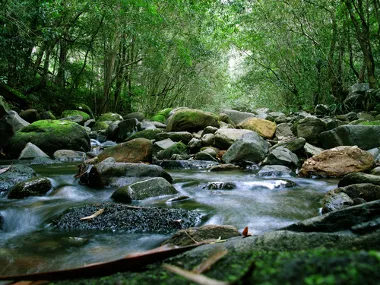Influencers
Baptista José Miranda, nascido em 28 de abril de 2002 no Lobito, ganhou destaque na internet ao transformar situações comuns em humor direto. Começou no YouTube em 2017, perdeu o primeiro canal e recomeçou em 2018, passando de tutoriais para esquetes e vídeos de rua. Ao mudar-se para o Brasil, ampliou o público, fez collabs e conquistou seguidores tanto em Angola quanto no Brasil, acumulando milhões de visualizações.
Tipo de regime
O sistema de governo de Angola é uma república presidencialista unitária, o que significa que o país é chefiado por um presidente que possui amplos poderes e que o Estado é administrado de forma centralizada. Nessa estrutura, o presidente acumula as funções de chefe de Estado e chefe de governo, sendo responsável tanto pela representação do país quanto pela direção das políticas internas.
Como Angola funciona como um Estado unitário, não existem estados ou províncias com grande autonomia política — a maior parte das decisões e diretrizes parte do governo central.
Apesar de adotar um sistema multipartidário, no qual vários partidos podem concorrer e participar do processo político, o poder executivo é fortemente concentrado na figura do presidente, que exerce influência significativa sobre a administração pública e sobre as principais instituições do país.img src="angolago.jpg" alt="governo" class="foto">